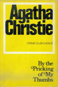
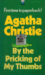
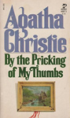
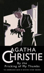
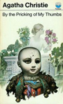
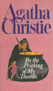
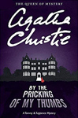
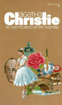

By The Pricking of My Thumbs is a work of detective fiction by Agatha Christie and first published in the UK by the Collins Crime Club in November 1968 and in the US by Dodd, Mead and Company later in the same year.
It features her detectives Tommy and Tuppence Beresford who were unusual in that they aged from novel to novel, unlike Miss Marple and Hercule Poirot, whose age remained more or less the same from Christie's first novels in the 1920s to the last in the 1970s. They were youthful in two Christie books written in the 1920s, middle-aged in a World War II spy novel and elderly in this work.
The title of the book comes from Act 4, Scene 1 of Shakespeare's Macbeth, when the second witch says: "By the pricking of my thumbs, Something wicked this way comes."








Screen Versions
The novel was adapted into a television movie in 2006 as part of the ITV Agatha Christie's Marple series even though Miss Marple was not included in the original story.
The plot was altered with Tommy away on military intelligence business abroad, and Tommy's part of the story was re-written for Miss Marple. Tommy was portrayed as a self-important strong male, while Tuppence was portrayed as a maudlin alcoholic who carried a hip flask and who was resentful of her husband's success; she too was going to be signed-up by MI6 but had then not been able to fulfill this ambition as she was pregnant with their first child. Tommy and Tuppence were played by Anthony Andrews and Greta Scacchi. The time in which this adaption is set is somewhere between the late 1940s and the early 1950s, but unclear and slightly inconsistent: a US B-17 (which left the UK soon after the war and was out of US service by 1949) overflies the village, yet US airmen wear the blue USAF uniform introduced in 1949, and there is also a 1951 Festival of Britain poster in the village shop.